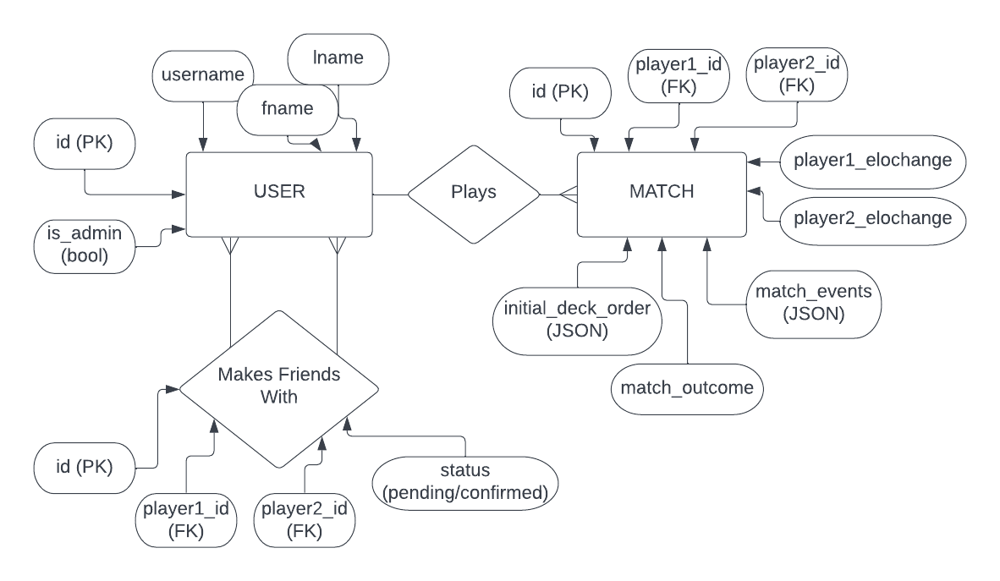

Design Document: Elo/Matchmaking system (Speed Card game)
Speed is a 2 player card game. To store our data we use 2 tables and
1 junction table. USER contains user information, MATCH contains
per-match information, and the junction table helps match users with
friends.
However, the baseline for our project will be the
elo/profile/friends system driving our (hopefully in the future)
speed implementation. The details of columns in the Match table are
all very dependent on how far we go, and mostly just serve to
document ideas.
Database ERA

Adjustments to Database ERA
- instead of player 1 and player 2 elochanges and id's, we use host and guest players to distinguish the two. Host players log in first, and are used for profile.php's default user and friends system.
- removed fname and lname for the user since it's not necessary.
- USER table now has rating and rd. We know this is duplicate data because elo changes are already in the MATCH table but dev said it was good for reducing the number of sql statements.
- match_outcome is now just the winner's id. if it is 0, the game is a draw.
- password hash is stored in the user table. don't know how we forgot that one.
- friends table distinguishes player1 and player2 with requester and requestee.
Webpages List:
-
/play.php - Card game UI where two players can log in and play a
frontend game of speed. POSTs to /submit-play.php where the
result is logged in the database and ratings are adjusted.
-
/search.php?query=string - Search for a specific player in the
database. always require a search form at the top of every page
that actions to here.
-
/profile.php?id=int - view the profile of a player. This
includes their username, their full name, their mutual friends
with the viewer, non-mutual friends, and match history. this
also has way to request a friend, or remove a friend if they already are one. This also includes form controls for only admins to submit, that lets them remove a user, edit a username, and add a match.
-
/match.php?id=int - view a specific match, which contains stats
on the elo and elo changes of the players, mistake count, etc. Includes a link to a match replay.
-
/leaderboard.php - a leaderboard ordered by the ratings of the players, with links to each of their profiles.
-
/replay.php?id=int - replays a match on the front end using the id given. Uses the match_events and deck_order in the database to generate and play a match.
-
/sources.php - links to all external sources used in the project.
Webpages Flowchart
flowchart
match[(Match)]
user[(User)]
friends{Friends}
user_username([username]) -.-> user
user_id([user_id]) -.-> user
user_elo([user_elo]) -.-> user
match_player1_id([player1_id]) -.-> match
match_player2_id([player2_id]) -.-> match
match_player1_elochange([player1_elochange]) -.-> match
match_player2_elochange([player2_elochange]) -.-> match
match_outcome([outcome]) -.-> match
match_id -.-> match
friends_player1_id([player1_id]) -.-> friends
friends_player2_id([player2_id]) -.-> friends
friends_status -.-> friends
match_player1_id -.- user_id
match_player2_id -.- user_id
friends_player1_id -.- user_id
friends_player2_id -.- user_id
play(play.php)
submit_match(submit_match.php)
search_bar[player search bar]
search(search.php/?query=string)
profile(profile.php/?id=int)
match_page(match.php/?id=int)
friends_page(friends.php)
play ==POST==> submit_match
search_bar ==GET==> search
submit_match --updates--> user_elo
submit_match --updates--> match_player1_elochange
submit_match --updates--> match_player2_elochange
submit_match --updates--> match_player1_id
submit_match --updates--> match_player2_id
submit_match --updates--> match_outcome
submit_match --updates--> match_id
search --searches--> user_username
user_id --retrieved_by--> search
search ==GET==> profile
profile --searches--> user_id
user --retrieved_by--> profile
profile --searches--> match_player1_id
profile --searches--> match_player2_id
match_id --retrieved_by--> profile
profile ==GET==> match_page
profile --searches--> friends_player1_id & friends_player2_id & friends_status
friends --retrieved_by--> profile
match_page --searches--> match_id
match --retrieved_by--> match_page
friends_page --searches & updates--> friends_player1_id & friends_player2_id & friends_status
friends --retrieved_by--> friends_page
Flowchart Modifications
- instead of friends and profile being separate pages, they are combined into profile, so everything flowing into and out of friends should be going into and out of profile.
- match.php now also links to replay.php?id=int, which searches the match DB Table to run a replay of the game.
- All pages have links to play, leaderboard, profile, search, and login/logout through the header included in all pages.
- player1 and player2 are replaced with host and guest for extra distinction.
- submit-match now also updates the rating and rd in the user table, following advice from dev.